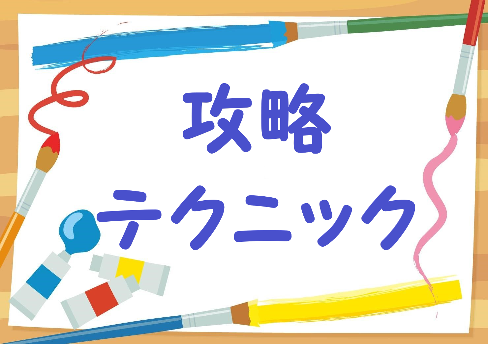

ロジックde懸賞（ロジックで懸賞）の攻略サイトです。
ゲームを進める上で行き詰まったときなどに活用下さい。
初級～上級テクニックも公開しております。
点（・）の使い方の説明もしております。
応募ポイントを早急に獲得したい方は答え一覧をご覧下さい。（ネタバレ）
ロジックde懸賞とは
無料の懸賞アプリです。
ステージをクリアすると応募ポイントを獲得し手軽に懸賞に応募が出来ます。
毎日新しいステージも追加されています。
簡単な足し算、引き算をするだけでルールは簡単ですがとても奥の深いゲームです。
絵が完成したときの感動は大きいです。（特に★4～5など）

| モノクロ・カラー共通 | 初級 | 1、ヒント + 空白の合計 = マスの数 |
| 2、ヒント + 空白の合計 < マスの数 | ||
| 3、塗れない確定位置に✖を付ける | ||
| 4、壁側から確定した数を塗る | ||
| 中級 | 5、どのヒントのパーツかを考える | |
| 上級 | 6、塗れるところがないときは「✖」をつけられる場所を探す | |
| カラー | 初級 | 1、ヒント + 空白の合計 = マスの数 |
| 2、ヒント + 空白の合計 < マスの数 |